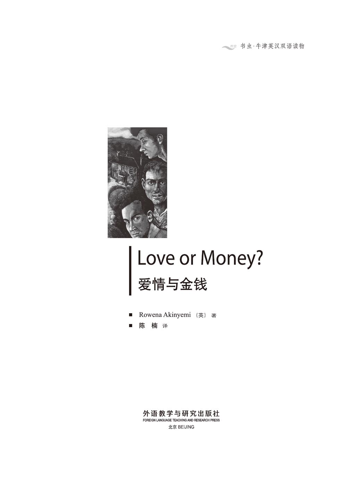
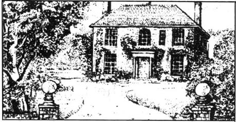
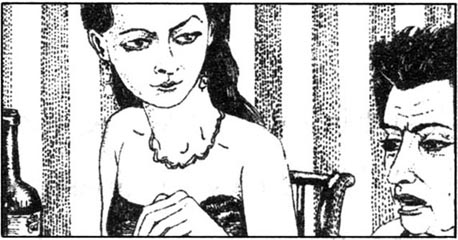
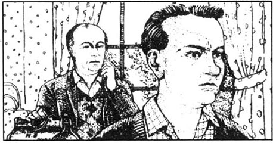
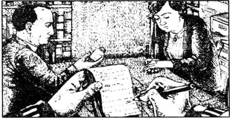
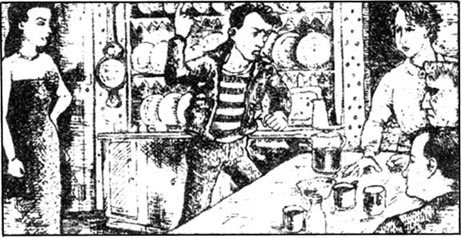
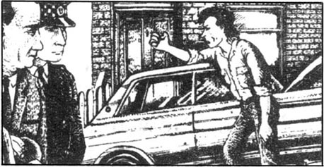
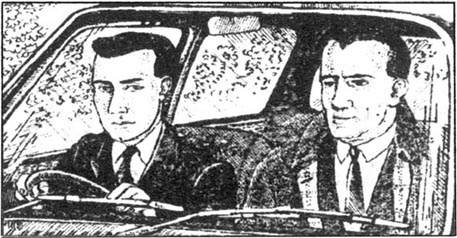
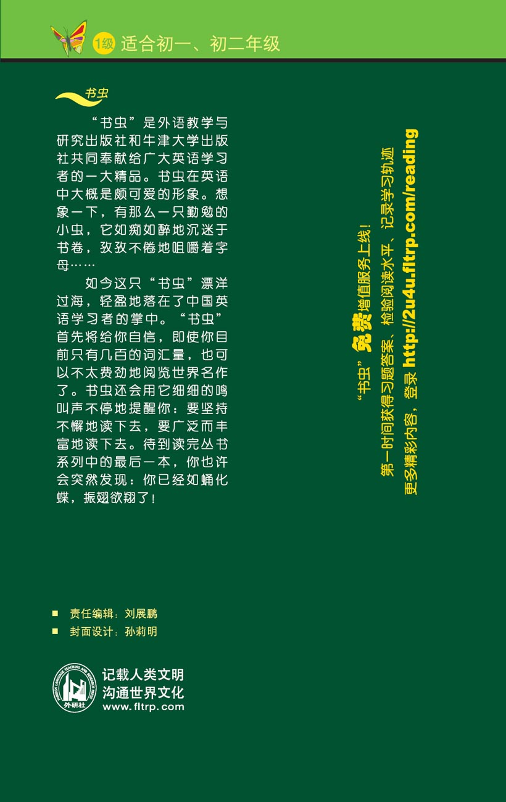

扉页

版权页
京权图字01-96-1582
Originally published by Oxford University Press, Great Clarendon Street, Oxford. © 1989 This edition is licensed for sale in the People's Republic of China only and not for export therefrom.
'Oxford' is a registered trademark of Oxford University Press.
只限中华人民共和国境内销售，不包括香港特别行政区、澳门特别行政区及台湾省。不得出口。
图书在版编目（CIP）数据
爱情与金钱：英汉对照／（英）阿金耶米（Akinyemi, R.）著；陈楠译．— 北京：外语教学与研究出版社，1997.1（2014.12 重印）
（书虫·牛津英汉双语读物）
书名原文：Love or Money?
ISBN 978-7-5600-1170-7
Ⅰ．爱… Ⅱ．①阿…②陈… Ⅲ．①英语—汉语—对照读物②长篇小说—英国—近代 Ⅳ．H319.4:I
中国版本图书馆CIP数据核字（2011）第061931号
出版人： 蔡剑峰
责任编辑：刘展鹏
封面设计：孙莉明
出版发行：外语教学与研究出版社
社 址：北京市西三环北路19号（100089）
网 址：http://www.fltrp.com
版 次：1997年1月第1版
书 号：ISBN 978-7-5600-1170-7
* * *
凡侵权、盗版书籍线索，请联系我社法律事务部
举报电话：(010)88817519 电子邮箱：banquan@fltrp.com
法律顾问：立方律师事务所 刘旭东律师
中咨律师事务所 殷 斌律师
爱情与金钱
爱情与金钱
你是一名不错的侦探，是吗？如果是的话，那你得比沃尔什探长先找出凶手。沃尔什探长是名警探，他工作虽说慢了点，可十分细心。你是位“快手”吗？
侦探是干什么的呢？侦探就是寻找线索的人。而线索就是告诉你谁是凶手的重要但又细小的事物。发现线索不容易，但本故事中有许多线索。有些线索有用——它们能帮助你，可有些线索却不利——它们妨碍你找到凶手。你得仔细点读，否则你会错过线索。
但请记住：你不必相信人们说的每件事。凶手显然会撒谎，可能其他人因不同的理由也会撒谎。也许他们希望某人死去。但是谁希望呢？谁杀的？你能找出凶手吗？
罗伊纳·阿金耶米是英国人，但在非洲度过了许多年。本书是她为英语学生写的第一部故事。
目录
chapter-a028_ 1
1
Chapter
The Clarkson family lived in the country near Cambridge, about half a mile from the nearest village and about a mile from the river. They had a big, old house with a beautiful garden, a lot of flowers and many old trees.
One Thursday morning in July, Jackie came in from the garden. She was a tall, fat woman, thirty years old. It was the hottest day of the year, but she wore a warm brown skirt and yellow shirt. She went into the kitchen to get a drink of water. Just then the phone rang.
'Cambridge 1379,' Jackie said.
'Hello. This is Diane. I want to talk to Mother.'
'Mother isn't here,' Jackie said. 'She's at the doctor's.'
'Why? What's wrong?'
'Nothing's wrong,' Jackie said. 'Why are you telephoning? You are going to come this weekend? Mother wants everyone to be here.'
'Yes, I want to come,' Diane said. 'I'm phoning because I have no money for the train ticket.'
'No money! Mother is always giving you money!'
'This phone call is very expensive,' Diane said coldly. 'Tell Mother please. I need the money.'
Jackie put the phone down. She took a cigarette from her bag and began to smoke. She felt angry because her sister always asked for money. Diane was twenty years old, the youngest in the family. She lived in London, in one room of a big house. She wanted to be a singer. She sang very well but she could never get work.
Jackie went back into the kitchen and began to make some sandwiches. Just then the back door opened, and her mother came in.
'It's very hot!' Molly said. She took off her hat and put it down on the table. She was a tall, dark woman with beautiful eyes.
Two big, black dogs came into the kitchen after her and ran across to her. She sat down and put her hands on their heads.
Jackie put the sandwiches on the table. 'Mother,' she said. 'Diane phoned. She wants money for her train ticket.'
Molly closed her eyes for a minute. Then she stood up. 'This afternoon I want you to get the house ready for the weekend,' she said, 'Oh, and please go to the village later and get my tablets.'
'Yes, Mother,' Jackie said.
Molly went to the door.
'Mother, please wait a minute,' Jackie said. 'Peter Hobbs came here this morning. He's very angry with you about that letter. He lost his job, you know. Why did you write to his office? He wants to talk to you about it.'
'Well, I don't want to talk to him,' Molly said. She opened the door.
'But Mother, you don't understand. He's seventeen, and it was his first job. He's very, very angry. He says... he says he's going to kill you!'
Molly did not answer. She went out of the room and closed the door.
come in 走进；进入。
brown a. 深黄色；棕色；褐色。
a lot of a large number of. 许多；大量的。
Cambridge n. a bridge in England. 剑桥。
kitchen n. a cooking place. 厨房。
expensive a. of high price. 昂贵的；价钱高的。
cigarette n. tobacco etc. rolled in paper for smoking. 香烟。
live in 住在……地方。
singer n. person who is famous of singing songs. 歌唱家。
go back 返回。
just then 正在这时。
tablet n. small measured amount of medicine compressed into a solid form. 药片。
understand vt. perceive meaning of. 理解。
go out of 走出。
1
1

克拉克森家住在剑桥附近的乡下，离最近的村庄约有半英里路，距离河边有1英里左右。他们有幢大而古老、并带有美丽花园的房子，花园里有许多花和许多古树。
七月的一个星期四早上，杰基从花园进了屋。她是个高大，肥胖，30来岁的女人。这是一年中最热的日子，而她却穿着暖色调的黄色衬衫和棕色裙子。她走进厨房去喝水，这时电话响了。
“剑桥1379号。”杰基说。
“你好！我是黛安娜。我想和妈妈说话。”
“妈妈不在家，”杰基说，“她看医生去了。”
“怎么了？出了什么事？”
“没什么，”杰基说，“你打电话干嘛？这个周末你回来吗？妈妈希望每个人都在。”
“是啊，我想回来，”黛安娜说，“我正因为没钱买火车票，才打电话。”
“没钱！妈妈总是给你钱！”
“电话费很贵，”黛安娜冷冷说道，“请告诉妈妈，我需要钱。”
杰基放下电话，她从包里拿了枝烟抽起来。她因她的妹妹总是要钱感到生气。黛安娜20岁了，在家里最小。她住在伦敦，在一所大房子里有间屋子。她想成为一个歌唱家，她唱得很棒，可是她却从来不愿找工作。
杰基走回厨房动手做一些三明治。这时候门开了，她的母亲走了进来。
“天太热了！”莫利说道，她摘下帽子放在桌上。她是位高个子，皮肤浅黑，有双美丽眼睛的女人。
两条大黑狗跟着她进了厨房围着她转，她坐下来把手放在它们的头上。
杰基把三明治放在桌上。“妈妈，”她说道，“黛安娜打来电话，她想要钱买火车票。”
莫利闭了一会儿眼，然后站起来。“下午我希望你收拾一下房子，为周末做准备，”她说，“哦，随后请去村里给我买些药片。”
“好的，妈妈。”杰基说。
莫利向门口走去。
“妈妈，请等一会。”杰基说，“彼得·霍布斯今早来了，他对你的那封信很生气。你知道，他丟了工作。你为什么写信给他的办公室？他想和你谈谈这事。”
“好啦，我不想和他谈，”莫利说道。她打开了门。
“可是妈妈，你不明白。他17岁了，那是他第一份工作，他非常非常生气。他说……他说他会杀了你！”
莫利没答话，她走出房间关上了门。
chapter-a028_ 2
2
Chapter
It was seven o'clock on Saturday evening. Jackie stood at the window. A car drove slowly up to the front door and stopped. A tall man with white hair got out. It was Albert, the husband of Molly's sister.
'Here's Uncle Albert,' Jackie said. 'Always late.'
She went out of the room and opened the front door. Albert came in and went at once to Molly.
'Oh, dear. I'm very late. I am sorry,' Albert said. 'Fifty years old today! What a wonderful dress!'
Molly did not smile. 'Thank you, Albert. We're all getting older.' Tonight she wore a long black dress, and the two black dogs sat at her feet. 'Everyone is here now. Let's go in to dinner,' she said.
Everyone stood up and went to the table.
'The table looks nice, Jackie. What wonderful flowers!' Diane said. She was a beautiful girl, with long black hair and dark blue eyes. She wore a long red dress.
Albert sat down next to Roger. Roger was Molly's son, her second child. He lived in Cambridge, in an expensive house.
'Someone called Peter stopped me down the road,' Albert said. 'Who is he? He's very angry with you, Molly.'
'That's Peter Hobbs, from the house across the road,' Jackie said quickly. She looked across the table at Molly. 'He lost his job last week and he's angry with everyone.'
'It's Molly he doesn't like,' Albert said.
Molly said nothing. Everyone began to eat.
'How is Aunt Annie?' Jackie asked.
'She's much worse now,' Albert said. 'She stays in bed all the time. She needs a nurse twenty-four hours a day.'
'I am sorry,' Molly said.
Albert stopped eating and looked at Molly. 'It's very difficult and very expensive, you know. Annie feels very unhappy because you don't visit her, Molly. She loves you very much. You are her little sister, you know.'
Molly closed her eyes for a minute. 'I know that, Albert. I am fifty years old, but I am always her "little" sister. Well, we can talk about it later.'
Albert laughed. 'Oh yes, we can talk later. It's always later with you, Molly. Always tomorrow. Never today.'
Jackie watched her mother. Her mother was angry with Albert. Molly never liked talking about her sister Annie and she did not like visiting her because she was very ill.
'That's a beautiful dress, Diane. Is it new?' Jackie asked.
'Thank you, Jackie. Yes, it's new, and very expensive. I got it on Wednesday,' Diane said. She smiled at Jackie.
'All your things are expensive,' Jackie said. She remembered the phone call on Thursday about the train ticket.
'I don't like cheap things,' Diane said. 'And I'm going to need more money soon. I want to go to America. Can you help me, Roger?'
'Oh no,' Roger said. 'Nobody wants to help you, Diane. You don't like working, we all know that, but we all want you to get a job.'
Diane laughed. 'It doesn't matter, Roger. I don't need your help. Mother always helps me. Mother loves me best.' She suddenly smiled, a quick, beautiful smile. But her eyes were cold.
Jackie looked at her mother. Molly's face was white. Jackie did not understand. Was her mother afraid of Diane? Jackie wanted her mother to be happy today.
'Would you like some more meat, Uncle Albert?' Jackie asked. 'Roger, can you give everyone some more to drink?' Roger got up and began to give more wine to everyone.
'This is good wine,' he said.
Molly smiled for the first time. 'Yes, your father loved this wine. He often drank it.'
'Yes,' Albert said, and looked at Molly. 'Expensive, too.'
'Would you like to meet Mr Briggs this weekend, Roger?' Jackie asked quickly. 'He's the new man at the farm. He wants to meet you.'
'Briggs? Briggs?' Molly said, suddenly angry. 'Don't talk to me about that man. I don' t like him. He wants half my garden for his farm. He needs more land, he says. I don't want him in my house. He's always dirty and he has bad teeth.'
Jackie stood up and got her bag. 'Excuse me, I want a cigarette.'
'Cigarettes! Always a cigarette in your mouth,' Molly said. 'I don't like it. Cigarettes aren't good for you.'
Jackie began to smoke. She felt angry but she said nothing. She wanted her mother to be happy this evening, but it was very difficult.
Roger drank some more wine. 'Well, Mother, perhaps Mr Briggs is right. The garden is very big,you know,' he said. 'It's a lot of work for you. The house is big, too. You're fifty now. You need to be more careful.'
'Roger! I don't need a nurse, you know! I work in the garden every day; I feel happy there.' Molly stood up. 'I know you all want my money. You come here for a free dinner, you don't want to see me. You don't love me. You want my house, and my money. Well, you can all wait. Nobody is getting more money from me, not before I die!'
'Don't say that, Mother!' Jackie cried.
Molly walked across the room to the door. 'I feel ill now. I'm going upstairs to bed.'
Molly left the room. Nobody moved.
'One day I'm going to kill that woman,' Diane said quietly.
Roger looked at Diane but said nothing. Albert moved his head slowly up and down. 'Ill! She's angry, that's all,' he said. 'Molly always gets angry about money. Why can't she be good to her sister? Annie's going to die soon. Molly knows that.'
Jackie finished her cigarette and stood up. 'Would everyone like some coffee? Come into the kitchen and let's drink it there.'
wonderful a. very remarkable or admirable. 漂亮的；精彩的；挺棒的。
across prep. from side to side of. 穿过；越过。
at once immediately. 立即。
nurse n. person trained to assist doctors in caring for the sick or infirm. 护士。
difficult a. needing much effort or skill. 困难的。
talk about 谈论。
cheap a. of low price. 便宜的。
laugh v. 笑。
be afraid of 害怕。
wine n. 酒。
land n. solid part of the earth's surface. 陆地；土地。
weekend n. 周末。
smoke v. 吸烟。
tooth n. 复数teeth 牙齿；
armed 全副武装的。
careful a. 小心；仔细。
look at 看。
die v. 死；死去。
coffee n. 咖啡。
finish v. bring or come to an end. 完成。
2
2

星期六晚上7点。杰基站在窗前。一辆小车徐徐驶到前门停下来。一个白头发、高个子的男人下了车，他是艾伯特，莫利姐姐的丈夫。
“是艾伯特姨父,”杰基说，“他总是迟到。”
她走出房间打开前门。艾伯特走进来，立刻便走向莫利。
“哦，亲爱的，抱歉，我来得太迟了，”艾伯特说，“今天是你50岁生日！多漂亮的裙子！”
莫利没有笑。“谢谢你，艾伯特。我们都老了。”今晚她穿了一条长长的黑裙子，两条黑狗蹲在她脚边。“现在大家都到了，咱们吃饭吧。”她说。
大家都站起来走到桌前。
“餐桌看起来不错，杰基。多美的花啊！”黛安娜说。她是个美丽的女孩，有一头长长的黑发和一双深蓝色的眼睛，穿了一条红色的长裙。
艾伯特坐在罗杰的旁边。罗杰是莫利的儿子，她的第二个孩子。他住在剑桥一幢昂贵的房子里。
“有个叫彼特的人沿路拦住了我，”艾伯特说，“他是谁？他很生你的气，莫利。”
“那是彼得·霍布斯，家住在马路对面的房子里。”杰基很快地说，她看着餐桌对面的莫利。“他上周丢了工作，他生每个人的气。”
“他不喜欢的是莫利。”艾伯特说。
莫利一言不发。大家开始吃东西。
“安妮姨妈好吗？”杰基问。
“她现在更糟糕了，”艾伯特说，“她所有时间都待在床上，一天24小时都需要护士。”
“我真难过。”莫利说。
艾伯特停下来看着莫利。“你知道，这事非常麻烦并且要花很多钱。莫利，安妮因为你不去看她很不高兴。她非常爱你，你知道，你是她的小妹妹。”
莫利闭上了眼。“我知道这些，艾伯特。我都50岁了，可我总是她的‘小’妹妹。好吧，我们以后再谈这事。”
艾伯特笑道。“哦，是啊，我们以后再谈。莫利，和你总是以后，总是明天，从来不是今天。”
杰基看着母亲，母亲在生艾伯特的气。莫利从来就不喜欢谈论她姐姐，也不喜欢去拜访她。而她病得很重。
“这裙子真漂亮，黛安娜。是新的吗？”杰基问。
“谢谢，杰基。是的，新裙子，非常贵。我周三才买的。”黛安娜说。她冲着杰基微笑。
“你所有的东西都昂贵，”杰基说。她记起周四关于火车票的电话。
“我不喜欢便宜的东西，”黛安娜说，“我不久会需要更多的钱，我想去美国。罗杰，你能帮我吗？”
“哦，不行，”罗杰说，“没有人想帮你，黛安娜。我们都知道，你不喜欢工作，但是我们都希望你找份工作。”
黛安娜笑道。“没关系，罗杰。我不需要你的帮助，妈妈总是会帮我的，妈妈最爱我。”她突然笑了一下，一个转瞬即逝的美丽的微笑。可她的眼神却是冷冷的。
杰基看着妈妈，莫利脸色苍白。杰基不明白为什么。妈妈会怕黛安娜？杰基希望妈妈今天快快乐乐。
“艾伯特姨父，你还要些肉吗？”杰基问。，“罗杰，你能给每人再添些饮料吗？”
罗杰站起来动手给大家加了些酒。“这酒不错。”他说。
莫利第一次笑了。“是啊，你父亲爱喝这种酒。他经常喝。”
“是啊，”艾伯特看着莫利说，“这酒也非常贵。”
“罗杰，这个周末你想见见布里格斯吗？”杰基急忙问，“他刚来农场。他想见见你。”
“布里格斯？布里格斯？”莫利说，她突然生气了。“不要和我谈那个男人，我不喜欢他。他想要我把一半的花园当他的农场。他说，他需要更多的土地。我不希望他来我家，他总是脏兮兮的，还有一口坏牙。”
杰基站起来拿她的包。“抱歉，我想抽枝烟。”
“烟！你的嘴总是叼着烟，”莫利说。，“我讨厌烟，抽烟对你不好。”
杰基开始抽烟，她感到很生气，但她什么也没说。她想让妈妈今晚快乐些，可看来这非常难。
罗杰喝了好些酒。“好啦，妈妈，布里格斯先生可能是对的。你清楚，花园是太大了，”他说，“你要干许多的事，房子也太大了。你都50岁了，你需要更多的照顾。”
“罗杰！你明白，我不需要护士！我每天在花园里干点活，我会感到快乐。”莫利站起来。“我知道你们都想要我的钱。你们来这儿只为一顿免费的晚餐，不是想来看看我，你们不爱我。你们想要我的房子，我的钱。好吧，你们都等着。在我死之前，任何人都别想从我这儿得一点儿！”
“别这么说，妈妈！ ”杰基叫道。
莫利穿过房间走到门前。“我现在觉得不舒服。我要上楼睡觉了。”
莫利离开了房间，大家都没动。
“有一天我会杀了这女人。”黛安娜平静地说。
罗杰看看黛安娜，但什么也没说。艾伯特上下摇晃着脑袋。“不舒服！她生气了，就这样，”他说，“莫利谈到钱总要生气。为什么她不能对她姐姐好点？安妮不久就要死了，莫利知道这些。”
杰基抽完烟站起来。“每人都来点咖啡吧，到厨房去，咱们在那儿喝。”
chapter-a028_ 3
3
Chapter
Early next morning the house was quiet. Suddenly there was a cry from the room next to Roger's, his mother's room. Roger opened his eyes and looked at the clock. It was nearly seven o'clock. He got out of bed and opened the door quietly. At the same time the door of his mother's room opened and Diane came out. Her face was very white.
'Roger! It's Mother! I brought a cup of coffee for her and I found her dead. She's dead...dead in her bed,' she cried. Roger went quickly to the door of his mother's room and looked in. The window was open but the room was warm. Molly was on the bed, one hand under her head. Roger went across to the bed and put his hand on her arm. It was cold. On the little table next to the bed was a hot cup of coffee and an empty cup.
'I'm going to call the doctor,' Diane said.
'She's dead,' Roger said slowly. His face, too, was white. 'Mother is dead!'
Diane walked across the room to the door. 'I'm going to phone the doctor,' she said again.
'Wait a minute!' Roger called. 'Let's tell the family first.'
'Family! Nobody loved Mother!' Diane went out and ran downstairs.
Roger slowly went downstairs after her and stood by the telephone.
'Dr Pratt, this is Diane Clarkson. It's my mother—she's dead. Can you come quickly?'
Diane put the phone down. 'It isn't true, Roger! Mother's dead! Daddy died last winter, and now Mother.' Diane began to cry.
'Don't cry, Diane,' Roger said. 'Let's go upstairs and tell Uncle Albert and Jackie.'
'No! You tell them! Nobody loved Mother. You aren't sorry. Look at you! You want her money. That's all.'
Roger suddenly wanted to hit Diane. 'Be quiet!' he said. 'What about you? You didn't love Mother. You wanted her money, too. Don't forget that!'
'It's true,' Diane said. 'Oh, I can't stay in this house. I'm going out. I'm going to the river with the dogs.'
'No,' Roger said. 'The doctor's coming and I want you here.'
Diane said nothing. She went into the kitchen and at once the dogs got up and came to her. 'Beautiful dogs! Daddy loved you and Mother loved you. Now I'm going to love you.' She opened the back door and went out with the dogs.
Roger did not move. He stood by the telephone. 'It's true,' he thought. 'I am happy about the money. I needed money, and now I'm rich. Things are going to be easier for me now. But Mother... why didn't I love her more? And now she's dead.' Slowly, Roger went back upstairs. He wanted to dress before Dr Pratt arrived.
Dr Pratt was a little fat man without much hair. He was the family doctor and he knew all the Clarkson family very well. He went upstairs at once and looked at Molly's body. He looked carefully at the cup of coffee and the empty cup on the table next to her bed.
'I'm sorry, Roger,' he said. 'Where is Diane? She phoned me.'
'She went out with the dogs,' Roger said. 'She was angry with me—angry with everyone.'
Dr Pratt said nothing for a minute. 'This is going to be very difficult. I'm going to phone the police, Roger.'
'Police! Why? What's wrong?'
'I don't know. Your mother wasn't ill. I saw her on Thursday and she was very well. Why did she die? I don't understand. I want to find out.'
Roger went across to the window and looked out at the garden. It was a beautiful summer morning. The sky was blue and the garden was green. It was all very quiet. His mother loved this garden. But Tom Briggs wanted the garden. And Roger wanted the garden, too. Roger felt worse and worse.
'Your mother took sleeping tablets,' Dr Pratt said. 'Did you know? On Thursday she had a new bottle of tablets, but I can't find it here in her room.'
'I didn't know,' Roger said. 'Very well. Let's go downstairs and you can phone the police.'
Roger went into the kitchen and made some coffee. Just then Diane came in with the dogs.
'Roger,' she said. 'Look, I'm sorry. I was angry and said some angry things.'
'It doesn't matter,' Roger said. 'Here you are, have some coffee. Dr Pratt is phoning the police. Did you know Mother took sleeping tablets? Well, the bottle is not in her room.'
'What? I don't understand.' Diane took the coffee and began to drink. Her eyes looked big and dark.
Just then Dr Pratt came into the kitchen. 'They're coming at once,' he said. 'Diane—I'm sorry about your mother.'
'Dr Pratt, I want to tell you about last night. Everyone was very angry...'
'Be quiet!' Roger said quickly.
'Diane never thinks before she opens her mouth,' he thought angrily.
Diane did not look at Roger. 'Last night Mother went to bed early because everyone...'
'Don't tell me,' Dr Pratt said. 'You can tell the police.'
Roger's face went red. Suddenly he felt afraid. 'The police are going to talk to everyone, and ask questions,' he thought. 'And they're going to want answers. It's going to be very difficult.' He finished his coffee and stood up.
'I'm going upstairs,' he said. 'I'm going to tell Uncle Albert and Jackie about Mother... and about the police.'
nearly ad. closely; almost. 几乎；差不多。
empty a. containing nothing. 空的。
wait a minute 等一会儿。
downstairs ad. 至楼下；在楼下。
quickly ad. taking only a short time to do thing. 很快地；迅速地。
hit v.come against with force. 撞击；打。
forget v. 忘记。
rich a. 富有的。
arrive v. 到达。
fat a. 肥胖的。
very well 很好。
next to 靠近。
bottle n. 瓶子。
question n. 问题。
3
3

第二天清晨整幢房子静悄悄的。突然从罗杰房间旁边他母亲的屋子里传出一声尖叫。罗杰睁开眼看了看表，还不到7点。他下了床，悄悄打开门。正在这时母亲房间的门也打开了，黛安娜走出来，脸色惨白。
“罗杰！妈妈她，我端了杯咖啡给她，发现她死了。她死了……死在床上。”她哭道。
罗杰急忙走到母亲的门前往里看，窗户是开着的，可房间里很温暖。莫利躺在床上，一只手在她头下。罗杰走到床前把手放在她的手臂上，尸体已经冷了。床边的小桌上有杯热咖啡和一个空杯子。
“我打电话去叫医生。”黛安娜说。
“她死了，”罗杰慢慢地说。他的脸也变白了。“妈妈死了！”
黛安娜穿过房间走到门口。“我去打电话叫医生。”她又说。
“等会儿！”罗杰叫道，“咱们得先告诉家人。”
“家人！没有人爱妈妈！”黛安娜走出去跑下楼。
罗杰跟着她慢慢走下楼站在电话旁。
“普拉特先生，我是黛安娜·克拉克森。我的妈妈——她死了。你能尽快赶来吗？”
黛安娜放下电话。“这不是真的，罗杰！妈妈死了！爸爸去年冬天死了，现在妈妈也死了。”黛安娜开始哭泣。
“别哭了，黛安娜，”罗杰说，“咱们上楼去告诉艾伯特姨父和杰基。”
“不！你去告诉他们！没人爱妈妈，你们不必内疚。看看你们！你们想要她的钱。不过如此。”
罗杰突然想揍黛安娜。“住嘴！”他说，“你自己呢？你不爱妈妈，你也想要她的钱，别忘了这点！”
“不错，”黛安娜说,“哦，我不能再待在这儿了。我要出去。我要带着狗去河边走走。”
“不行，”罗杰说，“医生就要来了，我想你留在这儿。”
黛安娜没说话。她走进厨房。狗立即站起来走到她旁边。“多漂亮的狗！爸爸爱你们，妈妈也爱你们。现在我会爱你们的。”她打开后门，带着狗走了出去。
罗杰没动，他仍站在电话旁。“不错，”他想，“我的确为钱高兴。我需要钱，现在我是富有了。事情现在对我来说更容易。但是妈妈……我为什么不多爱她一些呢？现在她死了。”罗杰慢慢地上了楼，他想在普拉特医生来前穿好衣服。
普拉特医生是个矮胖、头发稀少的男人，他是家庭医生，对克拉克森一家人都很熟悉。他立即上楼查看莫利的尸体。他仔细看了床边桌子上的咖啡和空杯子。
“抱歉，罗杰，”他说，“黛安娜在哪儿？她给我打的电话。”
“她带着狗出去了，”罗杰说，“她冲我生气，生每个人的气。”
普拉特医生沉默了一会。“这事非常难办。罗杰，我要打电话给警察。”
“警察！为什么？出了什么事？”
“我不清楚，你的母亲没病，我周四见到她身体很好。她为什么会死？我不明白，我想找出原因。”
罗杰走到窗前向外看花园。这是个美丽的夏天的清晨，天空蓝蓝的，而花园是一片绿色，一切都非常安静。妈妈爱这个花园，然而汤姆·布里格斯却打着这个花园的主意，并且罗杰也想要这个花园。罗杰觉得事情越来越糟。
“你的妈妈服了安眼药，”普拉特医生说，“你知道吗？她周四买了瓶安眠药，可是我在她的房间却找不到。”
“我不知道，”罗杰说，“好吧。咱们下楼去，你可以给警察打电话。”
罗杰走进厨房弄了些咖啡，这时黛安娜带着狗走了进来。
“罗杰，”她说，“嗯，我很抱歉。我冲你发火并说了些气话。”
“没关系，”罗杰说，“给，喝点咖啡。普拉特医生正打电话给警察。你知道妈妈服安眠药吗？唷，药瓶不在她的屋里。”
“什么？我不知道。”黛安娜端起咖啡开始喝。她的眼睛看起来又大又黑。
这时普尔特医生走进厨房。“他们马上来，”他说，“黛安娜——我为你妈妈难过。”
“普拉特医生，我想告诉你有关昨晚的事，每个人都非常生气……”
“别说了！”罗杰急忙说。
“黛安娜开口前从不经过大脑。”他生气地想。
黛安娜没理会罗杰。“昨晚妈妈早早就上床了，因为每个人……”
“不用告诉我，”普拉特医生说，“你可以告诉警察。”
罗杰的脸红了，他突然觉得有些害怕。“警察会找每个人谈话，问问题的。”他想。“然后他们会寻找答案，这事非常棘手。”他喝完咖啡站起来。
“我上去了，”他说，“我去告诉艾伯特姨父和杰基有关妈妈的事……还有报警的事。”
chapter-a028_ 4
4
Chapter
The police arrived very quickly. There were a lot of them. Some of them with cameras went upstairs to Molly's room. Two detectives talked to Dr Pratt in the kitchen. The family waited in the sitting room. It was a hot day again and the windows were open. The dogs sat quietly at Diane's feet. Nobody talked. Jackie smoked. They waited for a long time. Suddenly the door opened and the two detectives came in.
'Good morning. I am Detective Inspector Walsh and this is Sergeant Foster.' The Inspector did not smile. He was a big man in an old black suit and a black hat and coat. He wore a coat because he always felt cold. 'Last night someone put sleeping tablets in Mrs Clarkson's hot milk. We are going to question everybody, and we need a room, please.'
Roger stood up. 'I'm Roger Clarkson. You can have my father's old office. Come with me, it's along here,'
The office was not a very big room, but there was a table and three or four chairs. Roger opened the window.
'I would like to talk first to your uncle, Albert King,' Inspector Walsh said. He took off his hat and coat and sat down behind the table.
'Of course,' said Roger and left the room.
Sergeant Foster waited by the door. He was a very tall young man with black hair and a nice smile. He was not very happy this morning because he usually played tennis on Sunday mornings. He was one of the best players at the Cambridge Tennis Club.
Albert came in and sat down.
'I'm going to ask some questions, Mr King,' the Inspector said, 'and Sergeant Foster is going to write it all down.'
Albert looked at his feet. 'Yes, yes. It's your job. I know that.'
'Tell me about last night,' Inspector Walsh asked quietly. 'You were angry with Mrs Clarkson.'
Albert looked at Inspector Walsh for the first time. 'Yes, I was. Everyone was angry. Roger was angry. Diane wanted money to go to America. Then there's a man called Tom Briggs... He wants half the garden for his farm. Molly is a rich woman. I need money because my wife Annie—Molly's sister—is very ill. I told Molly this.'
'What happened next?'
'Well, Molly was angry with everyone and went upstairs. We went into the kitchen for coffee. Jackie wanted everyone to go up and say good night to Molly. She lives here with Molly so she wanted Molly to be happy. At first Roger said no. He was angry and didn't want to see his mother.'
'And did you see Molly in her room?'
'Yes. I was tired and I went upstairs first. I went to Molly's room and asked her for money again. But no—there was no money for her sister.' Albert stopped and put his hand over his eyes.
Inspector Walsh watched Albert for a minute. 'Did you hear noises after you went to bed?'
'Everyone went into Molly's room to say good night, I think. Later, I heard someone... He—or she—went downstairs. That was about midnight.'
'Very well, Mr King. Thank you, you can go now.' Albert left the room.
Inspector Walsh put his hands behind his head. 'What time is it? I'm hungry. We're learning a lot, but I need some coffee.'
'Shall I go to the kitchen?' Sergeant Foster asked.
'Oh, no. Later. Let's see Jackie Clarkson next.'
Jackie came in and sat down. She looked down at her hands and said nothing.
'We found the empty bottle of your mother's sleeping tablets in Diane's room,' the Inspector said suddenly. Then he waited. Jackie's face did not change and she said nothing. 'Tell me, did your mother get her tablets from the shop in the village?'
'Yes. My mother usually took a sleeping tablet every night so she needed a lot of tablets. Sometimes she got them from the shop, sometimes I did. On Thursday, I asked Peter Hobbs to get them. He lives in the house across the road, and he often goes to the village on his bicycle.'
'I see. Your mother wanted to stay in this house. How about you? Did you want to move?'
Jackie looked up for a minute and then down at her hands again. 'This is Mother's house. I loved my mother. She was good to me.'
'Did you see your mother in her room last night?'
'Yes, everyone did. Diane made hot milk and took it to Mother. She usually drank a cup of hot milk before she slept.'
Inspector Walsh put his hands behind his head. Jackie was very quiet. 'What did your mother say?'
Jackie opened her bag and looked for a cigarette. 'Can I smoke?'
'Of course. This is your house,' Inspector Walsh said. He watched Jackie. 'What did your mother say?' he asked again.
'She wanted to go downstairs again. She remembered the dogs—she wanted to get some dinner for them. I went to my room and she went downstairs.'
'What time was this?'
'I don't remember. About midnight, I think.'
'And the cup of hot milk?'
'It was on the table by her bed.'
'Did you need your mother's money?'
'No, Inspector. Money is not important to me. There are more important things,' Jackie said quietly.
'Well, your uncle Albert wanted money. Tom Briggs wanted the garden. You wanted nothing?'
Jackie finished her cigarette and looked up at the Inspector. Her eyes were suddenly angry. 'Don't forget Peter Hobbs. He lost his job because of my mother. He wanted to kill her, you know. And what about Diane? You found the empty bottle in her bag.'
Inspector Walsh listened carefully. 'We're going to question everyone, Miss Clarkson.'
Jackie said nothing for a minute. 'Would you like some sandwiches and coffee, Inspector?'
'Ah! Yes, please!' Inspector Walsh said warmly. 'I would like sandwiches and coffee very much.'
Jackie left the room. Inspector Walsh thought about her. Why was she suddenly angry? The room was quiet.
camera n. 相机。
detective n. person, esp. member of police force. 侦探。
wait for 等候。
tennis n. 网球
club n. association of persons meeting periodically for shared activity. 俱乐部。
inspector n. person employed to inspect or supervise. 探长；探员。
ask... for... 向某人要某物。
midnight n. midde of the night. 半夜；深夜。
bicycle n. 自行车。
dinner n.（一日的）主餐。
milk n. 牛奶。
a cup of 一杯……。
important a. of great effect. 重要的。
because of 因为。
kill vt. 杀；杀死。
4
4

警察很快就到了，来了许多人，一些人带着相机上楼到了莫利的房间。两个侦探在厨房和普拉特医生谈话。家人在客厅等着。这又是个热天，窗户开着，狗安静地卧在黛安娜脚旁。没人说话。杰基抽着烟。他们等了很长时间。突然门开了，两名侦探走了进来。
“早上好。我是沃尔什探长，这是福斯特警官。”探长没有笑。他是个高大的男人，穿件黑色的旧衣服，披着件黑色外套，戴着顶黑色的帽子。
他总觉得冷所以穿了件外套。“昨晚有人把安眠药放在克拉克森太太的热牛奶里，我们会找每个人谈。劳驾，我们需要一个房间。”
罗杰站起来。“我是罗杰·克拉克森。你们可以用我父亲过去的办公室。跟我来，就在这儿。”
办公室不是很大，但有一张桌子和三四把椅子。罗杰打开了窗户。
“我想先和你的姨父艾伯特·金谈谈。”沃尔什探长说。他摘下帽子，脱掉外套，坐在桌旁。
“当然可以。”罗杰说着离开了房间。
福斯特警官等在门边。他是个高个子、黑头发，有着迷人微笑的年青人。他通常在周日早上打网球，因而今早他有些不高兴。他是剑桥网球俱乐部最好的队员之一。
艾伯特走进来坐下。
“金先生，我想问你几个问题，”探长说，“福斯特警官会把你说的话都记录下来。”
艾伯特看着自己的脚。“好，好的。这是你们的工作。我理解。”
“告诉我有关昨晚的事。”沃尔什探长平静地问，“你对克拉克森太太生气了。”
艾伯特这才直视着沃尔什探长。“是的，我生气了。每个人都生气了，罗杰生气了，黛安娜想要钱去美国。然后有个叫汤姆·布里格斯的男人……他想要一半花园当他的农场。莫利是个富有的女人。我需要钱，因为我的妻子安妮——莫利的姐姐——病得很重。我把这些告诉了莫利。”
“接着发生了什么？”
“嗯，莫利冲大家生气，然后她上了楼。我们进厨房去喝咖啡。杰基希望大家都上去对莫利道晚安。她和莫利住在一块，所以她想让莫利快乐些。开始罗杰不同意，他在生气，不想见他的妈妈。”
“接着你去莫利的房间见她了？”
“是的。我累了，就先上了楼。我去莫利的房间再次向她要钱。但是不行——她的钱没有她的姐姐的份。”艾伯特停下来，用手蒙住了眼睛。
沃尔什探长看了会艾伯特。“你上床后听到什么声音吗？”“我想，每人都到莫利的房间对她道了晚安。随后，我听到有人……他——或者她——下了楼。那时大概是午夜。”
“很好，金先生，谢谢。你现在可以走了。”艾伯特离开了房间。
沃尔什探长把手放在脑后。“几点了？我饿了。我们了解了不少东西，但我需要点咖啡。”
“要我去厨房吗？”福斯特警官问。
“哦，不，待会儿。咱们接下来见见杰基·克拉克森。”
杰基走进来坐下，她低头看着手一言不发。
“我们在黛安娜的房间发现了你妈妈安眠药的空瓶子。”探长突然说，然后他等了一下。杰基脸色没变，还是什么都没说。“告诉我，你的妈妈是从村里的商店买到药的吗？”
“对。妈妈通常每晚都要服一片安眠药，所以她要许多药片。有时她去商店买，有时是我去。周四我请彼特·霍布斯去买。他住在马路对面的那幢房子里，他经常骑自行车去村里。”
“明白了。你母亲想留在这幢房子里。你呢？你想搬家吗？”
杰基抬起头，过了一会儿又低下头看着自己的手。“这是我妈妈的房子。我爱我的妈妈，她对我很好。”
“昨晚你去她的房间见她了吗？”
“去了，大家都去了。黛安娜煮了热牛奶并端给了妈妈。她通常在睡前要喝杯热牛奶。”
沃尔什探长把手放在脑后。杰基很平静。“你的妈妈说些什么？”
杰基打开包找了枝烟。“我可以抽吗？”
“当然，这是你家，”沃尔什探长说，他看着杰基。“你的妈妈说了些什么？”他又问。
“她又想下楼。她想起了狗——她想给它们弄点东西吃。我走回我的房间然后她下了楼。”
“这时几点了？”
“我记不清了。我想大概是午夜。”
“那么那杯热牛奶呢？”
“在她床边的桌上。”
“你需要你母亲的钱吗？”
“不，探长。钱对我不重要。有比钱更重要的东西。”杰基平静地说。
“嗯，你的艾伯特姨父要钱，汤姆·布里格斯想要花园。你什么也不想要？”
杰基抽完烟抬头看着探长。她的眼里突然冒着火气。“别忘了彼特·霍布斯。是我妈妈使他丢了工作。你知道，他想杀她。还有黛安娜，你们在她包里发现了空瓶子。”
沃尔什探长仔细听着。“我们会对每个人提问，克拉克森小姐。”
杰基沉默了一会。“探长，你们要些三明治和咖啡吗？”
“哈！好，麻烦了！”沃尔什探长温和地说，“我非常想要三明治和咖啡。”
杰基离开了房间。沃尔什探长想，她为什么突然生气了？房里静悄悄的。
chapter-a028_ 5
5
Chapter
After the coffee and sandwiches, Inspector Walsh called Roger Clarkson to the office. Roger came in and sat down. The Inspector began at once.
'Now, Mr Clarkson. Why was your mother angry with you last night?'
'This house is very big,' Roger said. 'It was a lot of work for Mother. I wanted her to move. But no, she loved this house and garden. She didn't want to move.'
'Tell me about your job, Mr Clarkson. Your mother is dead and now you're rich. Do you need money?'
Roger's face was suddenly afraid. 'What are you saying? I didn't kill my mother. I need money, that's true. A friend and I want to build ten houses here, in this garden. We can get a lot of money for them. So. I wanted Mother to sell this house. It's true. But Mr Briggs wanted half the garden, too, you know, for his farm.'
Inspector Walsh moved a pencil on the table. 'Tell me, what happened upstairs? You went to your mother's room?'
'Yes, I did. I wanted to say good night to my mother.'
'Did you talk about the house again?'
'Yes, I did. Again, she said no. She loved the house and didn't want to sell it.'
Inspector Walsh watched Roger for a minute. 'I see. We found the empty bottle of sleeping tablets, Mr Clarkson, in Diane's room.'
Roger's face did not change. 'Oh? Someone put them there. Diane did not kill my mother, I know that. She found the body.'
'Very well. I would like to see Diane next.'
Roger got up and left the room.
Inspector Walsh stood up and put his hands in his pockets. He went to the window and looked out at the trees. Why was Roger Clarkson afraid? Was it important? He looked at Sergeant Foster.
'Tomorrow morning, go to Mr Clarkson's office—you have the name,' he said. 'Ask some questions about him, about his job, friends, money.'
Sergeant Foster wrote it down. 'Yes, Inspector.'
'A good day for tennis, Sergeant?'
Sergeant Foster laughed. 'Don't say that. It's not easy, you know. I don't like sitting here looking at the sun.'
Diane came into the room and sat down. She looked at Sergeant Foster and smiled. 'I saw you at the Tennis Club last month, I think. You play very well.'
Sergeant Foster's face went red. Inspector Walsh looked at him, 'Oh yes. A fast and exciting player is Sergeant Foster.' Diane smiled again at Sergeant Foster and his face went red der.
'Well, Miss Clarkson,' Inspector Walsh said, 'I want you to talk about last night.'
Diane stopped smiling. 'Oh, I can talk about last night. I can't stop talking about it. We were all angry. Mother went to bed early and I made hot milk for her. We were all in the kitchen, and Peter Hobbs came in. He nearly broke the back door down.' Diane stopped.
'Yes?'
'He was very angry about a letter. He wanted to kill Mother. Are you going to talk to him?'
'We're going to talk to everyone.'
'Good. Tom Briggs came into the kitchen, too. Are you going to talk to him?'
'I'm asking the questions, Miss Clarkson. When did you take the milk upstairs?'
'I went up after Roger.' She stopped for a minute. Then she began again. 'I didn't like my mother, Inspector. She killed my father, you know. Last winter, after Christmas, she drove the car into a tree and killed my father.'
Inspector Walsh watched Diane's face carefully. 'I see. So you wanted to kill your mother?'
Diane laughed. 'I wanted to kill her, but I didn't. I can tell you a lot of things about this family, Inspector. Everyone wanted Mother to die. Uncle Albert wanted her money for his wife, Annie. And then my brother. He needs a lot of money. He has an expensive house and an expensive car. And think of Jackie. Do you know that Jackie didn't like Mother? A long time age, a nice boy worked here. He was the gardener. Jackie loved him very much, but Mother said no. A gardener was not a good husband for a Clarkson girl!'
Inspector Walsh listened quietly. All this was very interesting but was it important? Perhaps. What a happy family the Clarksons were!
'We found the empty bottle of sleeping tablets in your room,' Inspector Walsh said quietly. He watched her face carefully.
Diane stood up suddenly, her face angry. 'What? I didn't put it there! I'm not going to listen to this!' She ran out of the room.
'Well, well, well,' Inspector Walsh said. 'She likes you, Sergeant. You need to be careful.'
Sergeant Foster laughed but his face went red again.
'Someone put sleeping tablets in Molly's hot milk,' the Inspector said. 'All the family were in the kitchen last night. Peter Hobbs and Tom Briggs were there, too. One of them killed Molly.'
Inspector Walsh got his hat and coat. 'Come on. We need to talk to Peter Hobbs and Tom Briggs. Let's get some more coffee first. I'd like a sandwich, too. I'm hungry again!'
good night n. 晚安。
garden n. piece of ground for growing flowers. 花园。
pencil n. 铅笔。
pocket n. small bag on dothing. 口袋。
exciting a. arousing great interest. 令人兴奋的。
christmas n. christian festival.圣诞节。
drive vt. 驾驶。
hot a. 热的。
age n. 年龄。
gardener n. person employed to tend garden. 园丁。
perhaps ad. 也许。
5
5

用完咖啡和三明治后，沃尔什探长叫罗杰·克拉克森到办公室，罗杰走进来坐下。探长马上就开始了提问。
“嗨，克拉克森先生，你母亲昨晚为何生你的气？”
“房子太大了，”罗杰说。“妈妈得干许多活，我希望她搬家。可是不行，她爱这所房子和花园，她不想搬。”
“克拉克森先生，告诉我有关你工作的事，你母亲死了，现在你富有了。你需要钱吗?”
罗杰的脸突然露出害怕的神色。“你在说什么？我没有杀我的妈妈。我需要钱，这是真的。我和一个朋友想在这儿的花园里建10所房子，我们能从中赚许多钱，所以我希望妈妈卖了房子，这是事实。可是布里格斯先生也想要半个花园当他的农场，这你是知道的。”
沃尔什探长在桌上摆弄着铅笔。“告诉我，楼上发生了什么事？你去你母亲的房间了吗？”
“去了。我想对妈妈道一声晚安。”
“你又谈起了房子？”
“是的，我说了。她又说不行，她爱这所房子，她不想卖掉。”
沃尔什探长看了罗杰一会。“明白了。克拉克森先生，在黛安娜的房间里我们发现了安眠药的空瓶。”
罗杰没变脸色。“哦？有人放的吧。黛安娜不会杀妈妈，我知道的，是她发现了尸体。”
“很好。下一个我想见见黛安娜。”
罗杰站起来离开了房间。
沃尔什探长站起来把手放进口袋。他走到窗前看着外边的树。为什么罗杰·克拉克森会害怕？这重要吗？他看着福斯特警官。
“明天早上，去克拉克森先生的办公室——你知道他的名字。”他说，“问些有关他的情况，工作、朋友、钱。”
福斯特警官记了下来。“好的，探长。”
“今天可是打网球的好天气啊，警官。”
福斯特警官笑道：“别说这个，你知道，这种天气可不容易遇到。我不喜欢坐在这儿看太阳。”
黛安娜走进房间坐下来，她看着福斯特警官并冲他笑。“我想，我上个月在网球俱乐部见过你，你打得很棒。”
福斯特警官脸红了。沃尔什探长看着他。“哦，是的。那位打得激烈、兴奋的球员就是福斯特警官。”
黛安娜又朝着福斯特警官笑，他的脸更红了。
“好了，克拉克森小姐，”沃尔什探长说。“我想请你谈谈昨晚的事。”
黛安娜收住了笑容。“哦，我可以谈谈昨晚，我的确是要谈谈。我们都生气了。妈妈早早就上了床，然后我端了杯热牛奶给她。我们都在厨房，随后彼特·霍布斯进来了，他几乎把后门给砸烂了。”黛安娜停住了。
“接着呢？”
“他对那封信很生气，他想杀妈妈。你会和他谈谈吗？”
“我们会找每个人谈。”
“很好。汤姆·布里格斯也进了厨房。你要和他谈谈吗？”
“克拉克森小姐，我提几个问题。你什么时候端牛奶上楼的？”
“在罗杰之后。”她停了一会，然后她又说。“我不喜欢妈妈，探长。你要知道，她杀了我父亲。去年冬天，圣诞节后，她开车撞着一棵树，害死了我父亲。”
沃尔什警官仔细看着黛安娜的脸。“我明白了，所以你要杀死你母亲？”
黛安娜笑了。“我是想杀她，但是我没干。探长，我可以告诉你有关这个家的许多事。每个人都希望母亲死。艾伯特姨父想要她的钱给他妻子安妮。还有我哥哥，他需要很多钱。他有一所昂贵的房子和一辆昂贵的轿车。再想想杰基。你知道杰基不喜欢妈妈吗？很久以前，一个不错的男孩在这儿工作，他是个园丁，杰基非常爱他，可是妈妈不同意。园丁对克拉克森家女孩来说可不是丈夫的合适人选！”
沃尔什探长平静地听着。这些都很有趣，可是它们重要吗？也许吧。克拉克森家以前是一个多么快乐的家庭！
“我们在你的房间找到安眠药的空瓶。”沃尔什探长平静地说，他仔细看着她的脸。
黛安娜突然站起来，她一脸怒气。“什么？我没有放在那儿！我不要听这些！”她跑出房间。
“好了，好了，好了，”沃尔什探长说，“她喜欢你，警官，你得小心点。”
福斯特警官笑笑，他的脸却又红了。
“有人把安眠药放在莫利的热牛奶里，”探长说，“所有人昨晚都在厨房。彼特·霍布斯和汤姆·布里格斯也在那儿。他们中有人杀了莫利。”
沃尔什探长戴上帽子穿上外衣。“走吧，我们需要和彼特·霍布斯和汤姆·布里格斯谈谈。咱们得先喝点咖啡，我还想要块三明治。我又饿了！”
chapter-a028_ 6
6
Chapter
They found Peter Hobbs under his car—an old green car. He got up slowly. He wore old blue trousers and a dirty orange shirt.
'We want to talk about Mrs Clarkson,' Inspector Walsh said.
'Oh, it's about her,' Peter said. He looked at the Inspector. 'I know she's dead. Someone in the village told me.'
'Why did you go to the Clarkson's house last night?'
'Jackie wanted me to come and see her brother, Roger. "You're angry," she said. "Come and tell Roger." I went to the house but nobody opened the door. So I made a lot of noise and then they opened the door. Old Mrs Clarkson wasn't there. But I told Roger. I told them all!' Peter hit the car with his hand. 'I wanted to kill that woman. I lost my job, my first job, because of her. Last month I was in trouble with the police and that old woman wrote to my office and she told them about the police. I wanted to kill her!'
'Take it easy!' Inspector Walsh said. 'What happened next?'
'Jackie gave me some coffee, but her brother didn't listen to me,' Peter said angrily. 'Then Tom Briggs came in. He wanted to talk to Roger, too. But Roger didn't listen to him. Jackie was very unhappy—she nearly cried. Then I went home. That's all.'
'I see. Now tell me about the tablets. You went to the village on Thursday?'
'Tablets? Oh, yes. I remember. Jackie wanted me to get her mother's tablets from the village. I go to the village on my bicycle—this car doesn't work.'
'Thank you, Peter. That's all.'
'That's all?' Peter laughed angrily. 'You're going to come back, I know that! I know the police!'
Tom Briggs' farm was about half a mile away, near the river. It was not a big farm, and the house was old and dirty.
'Not much money here,' Inspector Walsh said.
Tom Briggs was a young man, about thirty years old, with dirty hands and bad teeth. 'What's wrong? Excuse me, I'm eating my dinner,' he said.
'We can wait. Finish your dinner,' Inspector Walsh said. 'We want to ask one or two questions about last night.'
'Come and wait in the front room,' Tom said and opened the door.
Inspector Walsh looked at the things in the front room. There was an old black and white television, and some books on the table. There was a picture of a happy young girl with long brown hair on the table, too. Inspector Walsh looked at the picture for a long time. Who was the girl?
Tom Briggs came back into the front room.
'Finished?' Inspector Walsh asked. 'You know Mrs Clarkson is dead?'
Tom Briggs sat down suddenly on the nearest chair. 'What? How did she die? When did it happen? I was there last night.'
'She died last night or early this morning. What did you do last night?'
'Me? Why are you asking me? I went there to meet Mr Clarkson—Roger. I'm losing money on this farm and I need more land. I want half Mrs Clarkson's garden.'
'You went into the kitchen. What did you do next? Can you remember?'
Tom Briggs looked at Sergeant Foster and then back at Inspector Walsh. 'I remember it very well. All the family were in the kitchen. Peter Hobbs was there, too. I talked to Roger. He wants his mother to sell the house. But he wants the land. He doesn't want me to have it. But now Mrs Clarkson is dead. What's going to happen now?'
Inspector Walsh got up and took the picture of the girl from the table. 'Who's this?'
Tom's face went red. 'Who? Oh! That's a friend. It's not... It was a long time ago.'
The two detectives walked back to the Clarksons' house through the garden. It was beautiful, green and quiet. Inspector Walsh felt tired and hungry. Who killed Molly? He knew the answer now, but he needed to ask one or two more questions.
'Let's go, Sergeant,' he said, and put on his hat again. 'Tomorrow is a new day.'
green a. 绿色的。
dirty a. unclean. 不干净的；脏的。
orange a. 橙色的。
listen to 听。
angrily ad. 恼怒地；气愤地。
through prep. from end to end or side to side of. 穿过。
hungry a. causing hunger. 饥饿的。
tire a. 疲劳的。
lose v. 失去。
put on 戴上。
hat n. 帽子。
6
6

他们在小车车底找到了彼特·霍布斯——一辆旧的绿色小车。他慢慢站起来，穿了条旧的蓝裤子和一件脏兮兮的桔色衬衫。
“我们想和你谈谈克拉克森太太，”沃尔什探长说。
“哦，谈谈她，”彼特说。他看着探长。“我知道她死了，村里有人告诉我了。”
“昨晚你为什么去克拉克森家？”
“杰基要我去见她的弟弟，罗杰。‘你生气了，’她说，‘来告诉罗杰吧。’我去了那儿但没人给我开门。所以我弄出很大的噪音，然后他们开了门。老克拉克森太太不在那儿。但是我告诉了罗杰，我全都告诉了他们！”彼特用手敲打着车。“我想杀了那个女人。我丢了工作，我的第一份工作，就是因为她。上个月我跟警察有些纠纷，那老女人就写信给我的办公室，说了有关警察的事。我想杀了她！”
“别激动！”沃尔什探长说，“接下来发生了什么事？”
“杰基给我咖啡，可她的弟弟没听我说，”彼特生气地说,“然后汤姆·布里格斯进来了。他也想和罗杰谈谈，可罗杰不听他的。杰基很不高兴——她几乎哭了。然后我就回家了。就这些。”
“明白了。现在告诉我有关药片的事。你周四去村里了吗？”
“药片？哦，是的。我想起来了。杰基要我从村里给她妈妈带些药片。我骑自行车去村里的——这辆车坏了。”
“谢谢，彼特。到此为止吧。”
“到此为止？”彼特生气地笑笑。“你们会回来的，我知道！我了解警察。”
汤姆·布里格斯的农场大约有半英里远，靠近河畔。农场不大，并且房子又旧又脏。
“这儿不值多少钱。”沃尔什探长说。
汤姆·布里格斯是个年轻人，30来岁，一双手很脏，还有一口坏牙。“出了什么事？抱歉，我正在吃饭。”他说。
“我们可以等，你去吃饭吧，”沃尔什探长说，“我们想问一两个有关昨晚的问题。”
“进来在前屋等吧。”汤姆说着打开了门。
沃尔什探长看着前屋的东西。屋里有一台旧的黑白电视机，桌上还有些书。一个棕色长发，充满快乐的年青女孩的相片也在桌上，沃尔什探长盯着照片看了好一会。这女孩是谁？
这时，汤姆·布里格斯走进前屋。
“吃完了？”沃尔什探长问，“你知道克拉克森太太死了吗？”
汤姆·布里格斯突然跌坐在最靠近身边的椅子上。“什么？她怎么死的？什么时候？我昨晚还在那儿。”
“她死于昨晚或是今天清晨。你昨晚干了什么？”
“我？为什么要问我？我去那儿见克拉克森先生——罗杰。我的农场在亏损，我需要更多的土地。我想要克拉克森夫人的半个花园。”
“你进了厨房，接下来干了什么？你能记得吗？”
汤姆·布里格斯看着福斯特警官，然后又回头看着沃尔什探长。“我记得非常清楚。所有他们家的人都在厨房，彼特·霍布斯也在。我和罗杰谈话，他想要他母亲卖了房子，可是他要地，不想让我得到。但是现在克拉克森夫人死了。将会发生什么呢？”
沃尔什探长站起来，拿起桌上女孩的照片。“这是谁？”
汤姆脸红了。“谁？哦！那是一个朋友。这不是……这是很久以前的了。”
两人穿过花园走回到克拉克森家。花园美丽，葱绿，宁静。沃尔什探长觉得又累又饿。谁杀了莫利？他现在知道了答案，可他需要再问一两个问题。
“咱们走，警官，”他说，然后戴上帽子。“明天是新的一天了。”
chapter-a028_ 7
7
Chapter
On Monday morning Sergeant Foster went to Roger's office and asked some questions. And then he went to Albert's house and asked some more questions. Inspector Walsh sat in his office and telephoned. He made phone calls about Peter Hobbs and he made phone calls about Tom Briggs. And then he had some coffee and sandwiches.
At three o'clock the two detectives drove to the Clarksons' house.
'I would like to see everyone,' he told Roger.
Everyone came into the sitting room and sat down.
Inspector Walsh stood in front of the windows and looked at them, one by one. 'I want to talk to you. Someone killed Molly Clarkson. Someone put sleeping tablets in her hot milk and killed her. Nobody wanted to tell me the true story, but now I know the true story and I'm going to tell you.'
The two dogs came slowly into the room and sat down at Diane's feet. It was very quiet in the room.
The Inspector looked at Albert. 'Mr King, your wife is very ill and needs a nurse. You told me this. You didn't tell me about your house. You're selling your house next month because you need the money.'
Albert was angry. 'Last year I asked Molly's husband for some money, and he said yes. But then he died in an accident.'
'Accident!' Diane cried. 'That was no accident. Mother killed Daddy because she wanted his money!'
'Let's talk about you now, Diane,' said Inspector Walsh. 'You visited your mother every month and you took money from her. Last month she gave you money for your television. This month she gave you money for your telephone. Every month you told your mother: "It was no accident; you killed Daddy. I'm going to tell the police." Your mother was afraid of the police and so she gave you the money. But in the end she wanted to stop you. She told Dr Pratt. No more money, she told Dr Pratt on Thursday; and on Saturday she died. You took the hot milk to your mother—what did she tell you?'
Diane began to cry. 'I loved Daddy! He always gave money to me; he loved me. It was Mother—she didn't love Daddy and she didn't love me.' Diane stopped. The dogs got up and went to the door. 'It's true, I took a lot of money from Mother. On Saturday she told me—no more money. I wanted to kill her, but I didn't.'
The dogs came back and sat down again at Diane's feet.
Inspector Walsh looked at Roger. 'Mr Clarkson also needed money.'
Roger's face went red. 'Don't tell them! Please!'
'Mr Clarkson lost his job last month. He has no money. But he has an expensive house and an expensive car. He likes expensive things.'
His sisters looked at him, but Roger put his hand over his eyes. 'Don't talk to me!'
'It doesn't matter now!' Diane said. 'Mother is dead and we have a lot of money. You don't need a job.'
Roger's face went red again. 'Be quiet, Diane!'
'Now,' Inspector Walsh began again. 'Peter Hobbs is a very angry young man. Mrs Clarkson was not very nice to him. He got the sleeping tablets from the shop. But did he put the tablets in the hot milk? I think not. Tom Briggs wanted half the garden for his farm. He was in the kitchen that night. Did he put sleeping tablets in the hot milk? I think not.'
Suddenly it began to rain. For a minute everyone watched it through the window. Jackie took a cigarette from her bag and began to smoke.
'But someone wanted Peter Hobbs to come into the kitchen that night. She wanted everyone to see him, and listen to him,' Inspector Walsh said.
'She...? I don't understand,' Roger began, and stopped.
Inspector Walsh moved away from the window and sat down. 'I'm going to tell you the true story now. Miss Clarkson, you wanted Peter Hobbs to come to the house that night. He was very angry with your mother because of that letter. He said: "I want to kill her." And you wanted everyone to hear that. Why?'
Jackie's face went white. 'It's not true! What about Diane? You found the empty bottle in her bag!'
Diane stood up. 'In my bag? Jackie! What are you talking about?'
'Be quiet, please, and sit down,' Inspector Walsh said. He looked at Jackie. 'It's true: we found the bottle in Diane's bag. But how do you know that? We didn't tell you.'
'You did... before... you told me before!'
'No. We found the empty bottle in Diane's room. We told you that. You talked about Diane's bag; we didn't tell you. Sergeant Foster wrote it all down.' Inspector Walsh looked carefully at Jackie. 'A long time ago, you knew Tom Briggs. He was the gardener here and you loved him. But your mother didn't like him.'
Jackie put her hands to her head. 'No! No!'
'We found your picture—an old one—in Mr Briggs' house. You were younger then, and your hair was long. Last year Tom Briggs came back, and you wanted him. He loved you, too, but he had no money. He wanted the garden for his farm, he wanted money, he wanted you. But your mother said no. In the end, you wanted to kill your mother... and you did kill her. Your mother went downstairs to see the dogs and you put the sleeping tablets in her hot milk. Later, you put the empty bottle in Diane's bag.'
Jackie stood up. Her eyes were dark and afraid. 'You don't understand!' she cried. 'Mother gave me nothing... all those years. I wanted to be happy... to be with Tom. That's all. I love Tom, and he loves me. But Mother said no. Always no.'
Then she began to cry. Nobody looked at her.
Jackie left the house in a police car. Inspector Walsh watched and then walked slowly to his car. He felt tired and hungry. He stopped and looked back at the house.
'Well,' he said to Sergeant Foster, 'in the end, they got the money: Albert, Roger, Diane. They're all rich now. But are they going to be happy?'
He got into the car. 'Let's go,' he said. 'I'm hungry; I need a sandwich.'
slowly ad. 慢慢地。
then ad. 接着；然后。
accident n. happened without being perceived. 事故。
televison n. 电视。
Saturday n. 星期六。
sleeping tablets 安眠药。
move away from 从……离开。
sit down 坐下。
picture n. 照片。
come back 返回。
in the end 最后；最终。
look back at 回头望；回顾。
need v. 需要。
7
7

星期一早上，福斯特警官去罗杰的办公室问了几个问题，然后他去艾伯特家，问了些别的问题。沃尔什探长坐在办公室打电话。他打电话找彼特·霍夫斯，然后又打电话找汤姆·布里格斯。接着他要了些咖啡和三明治。
3点钟，两名侦探开车去了克拉克森家。
“我想见见每个人。”他告诉罗杰。
大家都走进客厅坐下来。
沃尔什探长站在窗前轮流地看了每个人一眼。“我想和你们谈谈。有人杀死了莫利·克拉克森，有人把安眠药放在她的热牛奶里杀了她。没人愿意告诉我实情，但现在我知道了事情真相，我将会告诉你们。”
两条狗慢慢走进房间坐在黛安娜脚旁。房间里非常安静。
探长看着艾伯特。“金先生，你妻子病得很重需要一名护士，你告诉了我。你却没告诉我有关你的房子。因为你们需要钱，你们下个月就要卖掉房子。”
艾伯特生气了。“去年我向莫利的丈夫要钱，他答应了。可接着他死于一场事故。”
“事故！”黛安娜叫道，“那不是事故！妈妈想要他的钱，所以她杀了爸爸！”
“咱们现在谈谈你，黛安娜，”沃尔什探长说，“你每个月都来见你母亲，然后从她那儿要走钱。上个月她给你钱买电视，这个月她又为你的电话付钱。每次你都告诉你的母亲：‘那不是一场事故；你杀了爸爸。我要告诉警察。’你母亲害怕警察，所以她给你钱。但是最后她想阻止你。她告诉了普拉特医生，没有太多的钱了，她是周四告诉普拉特医生的。接着星期天她死了。你端热牛奶给你母亲——她跟你说了些什么？”
黛安娜开始哭。“我爱爸爸！他总是给我钱，他爱我。就是妈妈——她不爱爸爸，也不爱我。”黛安娜停住了。狗站起来向门口走去。“是真的，我从母亲那儿要了不少钱。我想杀了她，可我没有。”
狗回来又卧在黛安娜脚旁。
沃尔什探长看着罗杰。“克拉克森先生也需要钱。”
罗杰脸红了。“请你别告诉他们！”
“克拉克森先生上个月失业了，他没有钱了。可他有一所昂贵的房子和一辆车。他喜欢昂贵的东西。”
他的姐妹看着他，可罗杰用手捂住眼睛。“别对我说这些！”“现在没关系了！”黛安娜说。“妈妈死了，我们有很多钱，你不需要工作。”
罗杰的脸又红了。“住嘴，黛安娜！”
“现在，”沃尔什探长又开始说了，“彼特·霍布斯是个非常忿怒的年轻人，克拉克森太太对他不太好。他从商店里买到安眠药，可他会把安眠药放在热牛奶里吗？我认为不会。汤姆·布里格斯想要半个花园当他的农场。他那晚在厨房，是他放安眠药在热牛奶里了吗？我认为不是。”
突然天开始下雨了。好一会儿大家都看着窗外的雨。杰基从包里拿了枝烟，开始抽。
“可有人要彼特·霍布斯那晚去厨房。她想要大家都看见他，并听他说话。”沃尔什探长说。
“她……？我不明白。”罗杰说，然后又停住了。
沃尔什探长从窗边走过来坐下。“现在我将告诉你们事件的真相。克拉克森小姐，你那晚要彼特·霍布斯来家里。他因为那封信很生你母亲的气。他说：‘我要杀了她。’因而你想要大家都听到这话。为什么？”
杰基的脸变白了。“这不是真的！黛安娜呢？你们在她包里发现了空瓶子！”
黛安娜站起来。“在我包里？杰基！你在说什么？”
“请安静，坐下。”沃尔什探长说，看着杰基。
“没错，我们在黛安娜的包里发现了瓶子。可你怎么知道的？我们并没有告诉你。”
“你们告诉了……先前……你们先前告诉了我！”
“没有。我们告诉你，我们在黛安娜的房间发现了空瓶，但你说的是黛安娜的包，我们并没有告诉你。福斯特警官记下来了。”沃尔什探长仔细看着杰基。“很久以前，你认识了汤姆·布里格斯，他是这儿的园丁，你爱上了他，可你的母亲不喜欢他。”
杰基把手放在头上。“不！不！”
“我发现你的相片——一张旧的——在布里格斯家里。你比现在年青，头发长长的。去年汤姆·布里格斯回来了，你想得到他，他也爱你，可他没有钱。他想要花园当他的农场，他想要钱，他也想得到你。可你母亲不同意。最后，你想杀了你母亲……然后你真的杀了她。你母亲下楼去看狗，然后你把安眠药放在她的热牛奶里。随后，你把空瓶子放进黛安娜的包里。”
杰基站起来，她黑黑的眼睛带着恐惧。“你们不知道！”她大声道，“母亲什么也没给我……这么多年了。我想要幸福……和汤姆一起，就这些。我爱汤姆，他也爱我。可母亲不同意，总是不同意。”然后她开始哭，没人理睬她。
杰基走出房子上了警车。沃尔什探长注视着她，然后慢慢走向他的车。他觉得又累又饿,，他停下来回头看着那所房子。
“好了，”他对福斯特警官说，“最后，他们得到了钱：艾伯特，罗杰，黛安娜。他们现在都富有了。可他们会快乐吗？”
他上了小车。“咱们走吧，”他说。“我饿了，我需要块三明治。”
Exercises
Exercises
A Checking your understanding
Chapter 1 Which person in the chapter...
1 ... went into the kitchen to get a drink of water?
2 ... went to the doctor?
3 ... has no money for the train ticket?
4 ... made some sandwiches?
5 ... is very angry with Molly?
Chapter 2 Who said these words in the chapter?
1 'It's very difficult and very expensive, you know.'
2 'I want to go to America. Can you help me, Roger?'
3 'It's a lot of work for you. The house is big, too. '
4 'Nobody is getting more money from me, not before I die!'
5 'One day I'm going to kill that woman.'
Chapter 3 Write answers to these questions.
1 Who brought Molly a cup of coffee?
2 Who phoned the doctor?
3 When did Molly have a new bottle of tablets?
4 Was Molly ill on Thursday?
Chapter 4 Are these sentences true (T) or false (F)?
1 Sergeant Foster usually played tennis on Sunday mornings.
2 Molly got her sleeping tablets from a shop in Cambridge.
3 Jackie made hot milk and took it to Molly.
4 Money was not important to Jackie.
Chapter 5 Find answers to these questions in the text.
1 Who wanted to build ten houses in the garden?
2 What did the police find in Diane's room?
3 Who did Jackie love a long time ago?
4 Who was in the kitchen on Saturday night?
Chapter 6 Who said these words in the chapter?
1 'I lost my job, my first job, because of her.'
2 'Now tell me about the tablets.'
3 'I'm losing money on this farm and I need more land.'
4 'It was a long time ago.'
Chapter 7 How much can you remember? Check your answers.
1 Who visited Molly every month and took money from her?
2 Where did the police find the empty bottle?
3 Where was Jackie's picture?
4 Who loved Tom Briggs?
B Working with language
Use these words to join the two sentences together.
so and then because
1 Jackie felt angry. Her sister always asked for money.
2 Roger got out of bed. He opened the door quietly.
3 Inspector Walsh always felt cold. He wore a coat.
4 Diane opened the back door. She went out with the dogs.
5 I'm losing money on this farm. I need more land.
6 I don't need your help. Mother always helps me.
Put these sentences in the right order. Then check your order with chapter 3 .
1 Molly's arm was cold. She was dead.
2 Dr Pratt phoned the police.
3 Early next morning there was a cry from the room next to Roger's.
4 Roger went to tell Albert and Jackie about Molly... and about the police.
5 Diane phoned the doctor.
6 Dr Pratt went upstairs and looked at Molly's body.
C Activities
1 Write Inspector Walsh's diary for Sunday.
2 Write about a person that you do not like in the story.
封底
